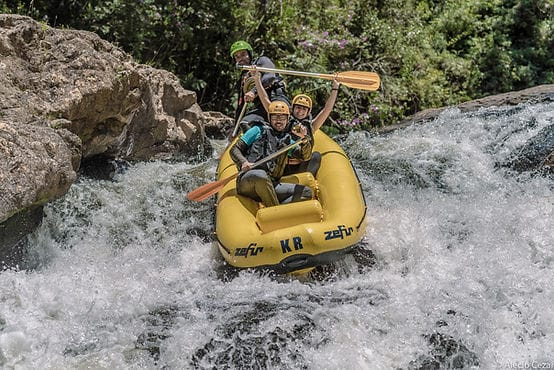
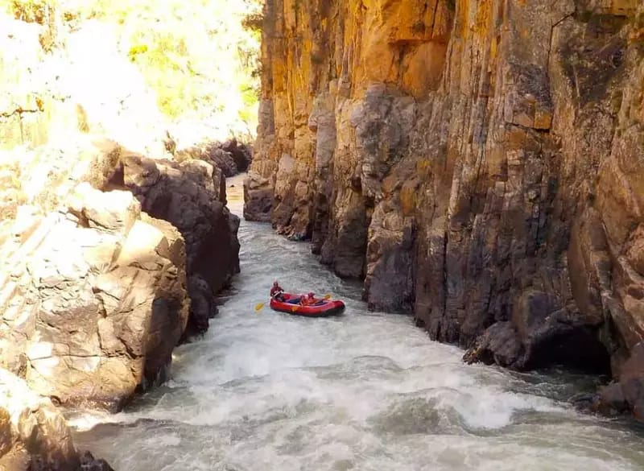

The Jacaré-Pepira River is one of the main natural attractions in the city of Brotas, located in the interior of the state of São Paulo, Brazil. It is widely known for its crystal-clear waters, stunning landscapes, and thrilling rapids that make it a popular rafting destination. The Jacaré-Pepira River meanders through a breathtaking natural landscape, surrounded by dense tropical forests and mountains, creating a spectacular backdrop for rafting adventures. The river offers a variety of rapids, from calm and gentle stretches to more challenging sections, making it suitable for both beginners and experienced adventurers. Every skill level can find an exhilarating adventure on the Jacaré-Pepira.
Rivers
Jacaré-Pepira River in Brotas, São Paulo

Rio Novo in Tocantins
The Rio Novo, located in the state of Tocantins, Brazil, is an incredible destination for water sports enthusiasts and nature adventurers. This spectacular river is renowned for its pure and crystal-clear waters, offering a unique rafting experience. The Rio Novo is famous for its exceptionally clear and pristine waters, making it an ideal location for water sports, including rafting. The water's transparency provides incredible visibility, enhancing the overall fascination of the experience. The river winds through stunning natural landscapes, with banks teeming with lush vegetation and picturesque rock formations. The untouched nature surrounding the Rio Novo creates a truly awe-inspiring environment for adventurers.
Chapada dos Veadeiros

Imagine navigating through pristine waters with astonishing clarity while surrounded by magnificent rock formations. This is what awaits you
when you choose to go rafting on the Tocantinzinho River in the captivating Chapada dos Veadeiros, located in the state of Goiás, Brazil.
Imagine navigating through pristine waters with astonishing clarity while surrounded by magnificent rock formations. This is what awaits you when you choose to go rafting on the Tocantinzinho River in the captivating Chapada dos Veadeiros, located in the state of Goiás, Brazil.